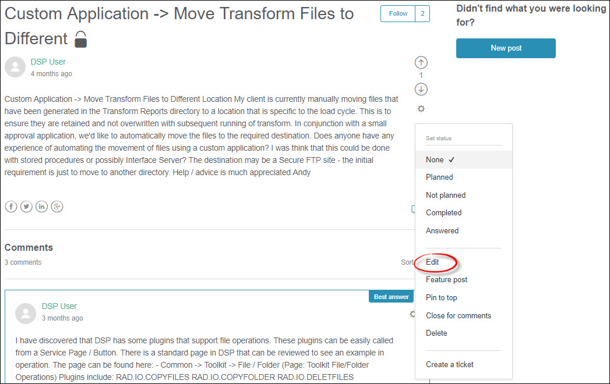

Add Posts to Data Insiders
To add a post to Data Insiders:
1. Navigate to the Data Insiders community.
2. Click New Post.
3. Enter a post name in Title field.
4. Enter or copy content into the Details field.
NOTE: Formatting is preserved if content is formatted in Word or Google Docs and pasted here. Otherwise, use the formatting tools within Data Insiders.
- Select a topic name from the Topic list box.
- Click Submit.
Review cConnect Posts to Add to Data Insiders
cConnect is a legacy WebApp used internally by Syniti consultants. When requested, cConnect posts are turned into Data Insider posts.
The contents of the cConnect system, where consultants post questions and responses about issues, are posted here:
https://support.syniti.com/hc/en-us/community/topics/360000496693--Internal-cConnect-Integration?page=2#posts
The Support Team’s Responsibilities
The Support team has performed an initial review on this content to:
-
Ensure answers don't violate support rules
-
Ensure solution is correct
-
Comments provide sufficient information to stand alone (are not missing attachments)
-
Post and solution make sense
-
All customer/partner information is removed.
NOTE: Posts with 1 upvote passed this check. Posts with 1 downvote did not.
The Documentation Team’s Responsibilities
The Documentation team responsibilities are to:
-
Correct grammatical and punctuation errors
-
Review content for standards:
-
Point of views in first (I/we) or third person (the client) are fine – doesn’t need to be consistent across all posts
-
If a user included their name in the post, leave it as is. Aliases are to be kept bold.
-
Remove client references (replace the client’s name with something generic, for example, the client)
-
Revise the post title to summarize the post in the form of a question (by default, the title is the first few words of the post)
-
Remove references to attachments. (Files were not imported into Data Insiders from cConnect). If unsure that the post can stand alone without the attachment reference, contact Support for guidance.
-
Make note of any posts that would be good candidates for Data Insiders blog articles.
Review & Add cConnect Posts to Data Insiders
To review a post and add it to Data Insiders:
-
Find a post with an upvote.

-
Click the title to edit the post.
-
Review and edit the post question by selecting Edit from the Settings (gear) icon (located to the right of the post question).

-
Select DSP Questions & Answers from the Topic list box.

-
Click Update; the post is removed from the Internal cConnect Integration page and moved to DSP Questions & Answers page.
-
Review and edit the responses by selecting Edit from the Settings (gear) icon (located to the right of the response). Some posts have multiple comments; edit each comment individually.

-
After reading the posts and comments, Support can mark the strongest comment as “Best answer.” If “Best answer” is marked on a comment, update the post to reflect it has been sufficiently answered by selecting Answered from the Settings (gear) icon next to the post question. If there isn’t a comment with “Best answer,” skip this step.

NOTE: Marking a post as Answered puts a green Answered icon next to the post’s title.